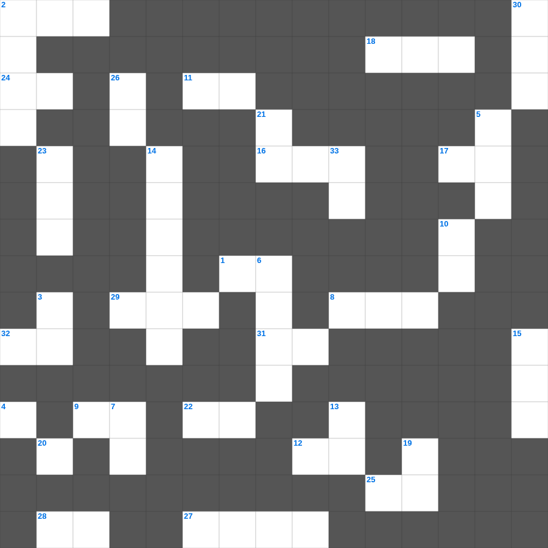

출애굽기 마스터 100
📌 서비스 정의
십자가로세로는 교회 주보와 주일학교에서 사용할 수 있는 성경 기반 가로세로 퍼즐 서비스입니다. 성경 인물, 사건, 핵심 구절을 바탕으로 제작되었습니다. 온라인 풀이 및 인쇄 기능을 제공합니다.
📖 출애굽기란?
출애굽기는 이스라엘 민족이 이집트의 노예 생활에서 해방되는 과정을 기록합니다. 모세의 리더십, 열 가지 재앙, 홍해를 건너는 기적, 시내산에서 십계명을 받는 사건이 핵심입니다. 출애굽기는 총 40장으로 구성되어 있습니다.
📚 출애굽기의 주요 사건·주제
모세의 출생과 부르심 · 열 가지 재앙 · 홍해 도하 사건 · 시내산 십계명 · 성막 건축
오늘은 출애굽기의 주요 내용을 담은 출애굽기 말씀 퀴즈를 준비했습니다. 총 35개의 힌트가 있으며, 주일학교 교재나 성경공부 자료로 활용하기 좋습니다. 무료로 즐기는 출애굽기 가로세로 퍼즐을 지금 바로 풀어보세요!

📝 가로 힌트
1. 에브라임 지파에게 할당된 땅의 중심
2. 이스라엘 뒤를 쫓아온 애굽의 군대 병거 수
4. 너희 몸은 너희가 하나님께로부터 받은 바 너희 가운데 계신 성령의 이것인 줄을 알지 못하느냐
8. 바울이 디모데에게 '너는 배우고 이것 일에 거하라'고 함
9. 히스기야의 기도를 들으시고 앗수르 군사를 치신 존재
11. 이것이 모든 사람의 이것이니라
12. 귀환 길의 안전을 위해 에스라가 선포한 것
16. 솔로몬이 죽었을 때 장사된 곳
17. 수고하고 무거운 짐진 자들아 다 내게로 오라 내가 너희를 이것케 하리라
18. 모세의 누이로 나중에 나병에 걸렸던 자
20. 주의 말씀은 내 발에 이것이요 내 길에 빛이니이다
22. 하나님의 뜻대로 하는 이것은 후회할 것이 없는 구원에 이르게 하는 회개를 이루는 것이요
24. 그가 별들의 수효를 세시고 그것들을 다 이것대로 부르시는도다
25. 육신의 생각은 사망이요 영의 생각은 이것과 평안이니라
27. 낮에는 이것 기둥으로 인도하심
28. 그런즉 너희는 하나님께 복종할지어다 마귀를 이것하라 그리하면 너희를 피하리라
29. 믿음의 기도는 병든 자를 구원하리니 주께서 그를 이것하시리라
31. 시온의 딸아 크게 기뻐할지어다... 보라 네 왕이 네게 임하시나니 그는 공의로우시며 구원을 베푸시며 겸손하여서 이것을 타시나니
32. 형제들아 서로 원망하지 말라 그리하여야 심판을 면하리라 보라 이것자가 문 밖에 서 계시니라
📝 세로 힌트
2. 사도행전의 기록 시기 (대략 주후 몇 년경)
3. 소제물을 구울 때 사용하는 도구 중 하나
5. 모세의 어머니 이름
6. 이세벨을 피해 도망친 엘리야가 누운 '이것 나무' 아래
7. 첫째 짐승은 이것과 같은데 독수리의 날개가 있더니
10. 야곱이 얍복 강가에서 밤새도록 한 것
11. 너희는 이 세대를 이것받지 말고 오직 마음을 새롭게 함으로 변화를 받아
13. 유다인들이 승리한 후 잔치를 베푼 이유
14. 모르드개가 에스더에게 경고한 말 '너는 이것을 면하리라 생각지 마라'
15. 아브라함이 나그네 셋을 대접한 곳
19. 의인의 길은 돋는 햇살 같아서 크게 빛나 한낮의 이것에 이르거니와
21. 룻의 시아버지 엘리멜렉은 어느 지파인가
23. 솔로몬이 지은 노래의 개수
26. 에스라가 백성들에게 가르친 '하나님의 이것'
30. 완공된 성전에서 드린 봉헌식의 기쁨
33. 너희는 너희가 하나님의 이것인 것과 하나님의 성령이 너희 안에 계시는 것을 알지 못하느냐
🧩 이 퍼즐에서 배우는 내용
이 퍼즐은 출애굽기 마스터 100의 핵심 단어와 개념을 자연스럽게 복습할 수 있도록 구성되었습니다. 주일학교 수업이나 개인 성경공부에서 학습 내용을 점검하는 용도로 바로 활용할 수 있습니다.
🧑🏫 교회 교육 자료 활용
이 퍼즐은 주일학교 교재 추천 자료로 활용할 수 있고, 주일학교 주보에 넣기 좋은 분량으로 구성되어 있습니다. 수업용 주일학교 교안에 활동지로 붙이거나, 예배 후 복습용 주일학교 공과교재로 바로 사용할 수 있습니다.
🏷️ 키워드
출애굽기 말씀 퀴즈, 출애굽기, 십자가로세로, 성경퀴즈, 말씀퀴즈, 가로세로퍼즐, 주일학교 교재 추천, 주일학교 주보, 주일학교 교안, 주일학교 공과교재